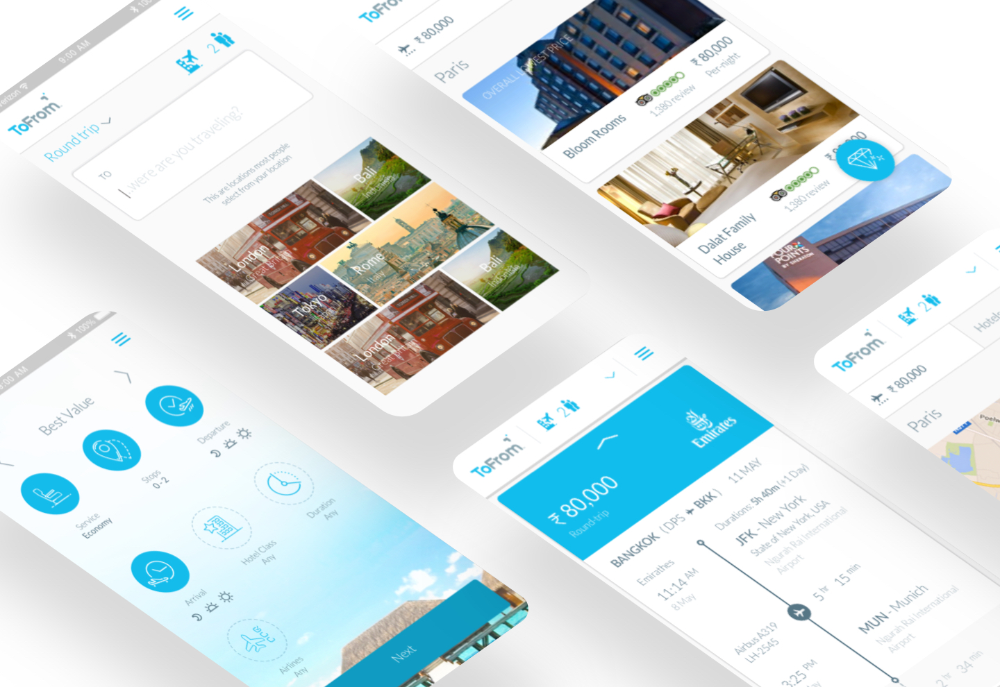
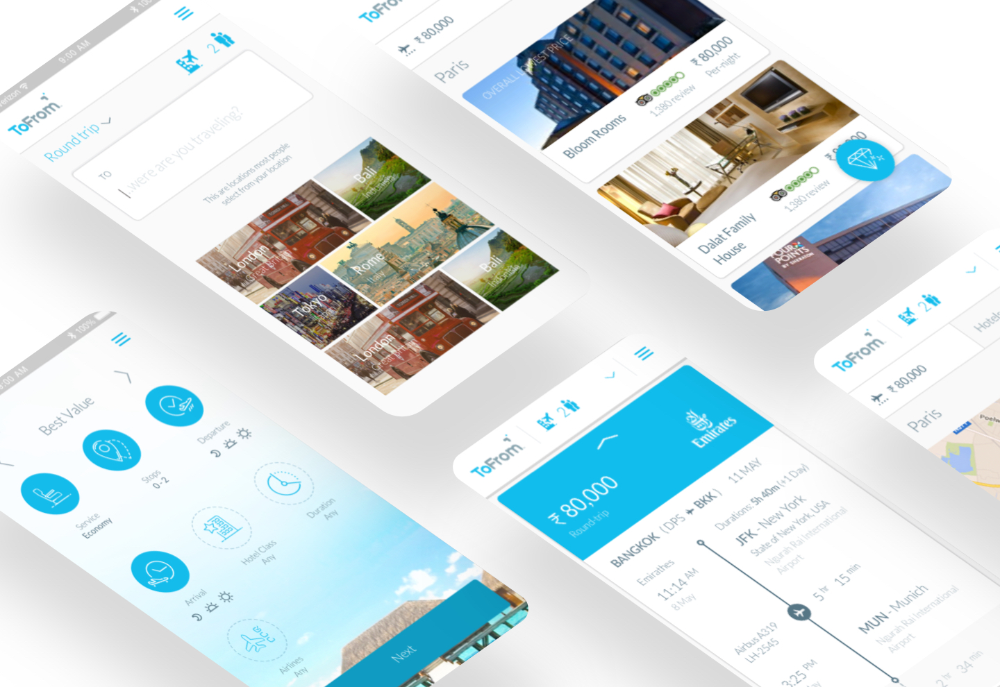

Personalization: Tailoring the product
ToFrom believes that trip planning should be simple and fun. Most travel booking sites offer a negative user experience, giving the user too many search options and confusing them too much information. To make travel booking simple, we used a personalization algorithm and asked users to create search personas prior to beginning their search since this was unlikely to change post first time user experience.

Onboarding: Creating a memorable first time user experience
The onboarding experience for ToFrom was one of our biggest differentiators. Creating a simple experience was crucial. We decided to play up the emotional factor by using a light color palette and used playful copy to convey the joy that should come with travel planning.

Flight search: Creating a sense of context
From our customer interviews, we realized that a major problem for most customers was losing contextual awareness. A UI that kept users in context in trip planning workflow was important. To solve this problem, we designed a trip planning wizard customers could use to navigate between the different stages of trip planning.

Finalized design

Hotel search: Creating consistency
We used a custom design library to create consistency between the flight and hotel booking process.

Finalized design

Hotel search details: Larger images for the Indian market
We researched potential customers from our initial market of India and learned that customers in the region made hotel booking decisions based on a combination of image quality and price. As a result of this study, we made images a key part of their user experience. Understanding the local market gave us valuable insight which we used in our designs.

Mobile design: Indian mobile market
India is the world’s second largest smartphone market. We needed to understand how mobile fit into the trip-booking process. Our research indicated that a significant portion of our intended target audience only used smartphones to search for trips, but went with desktops to filnalize the book process. This understanding helped us with product strategy and roadmaps.
 
